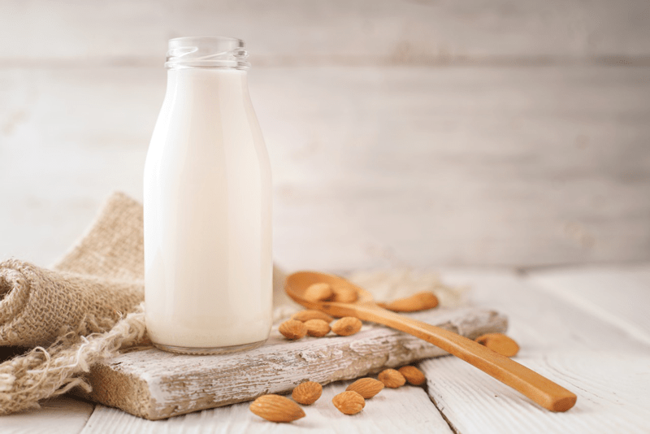
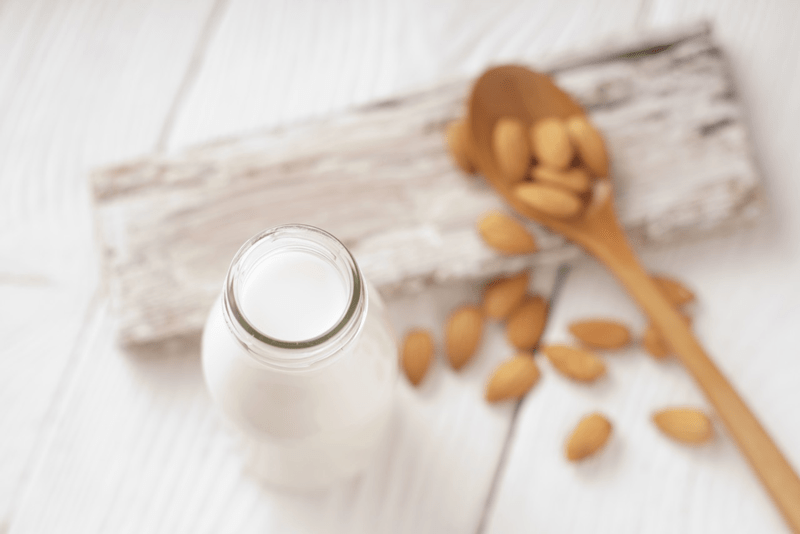

Almond Milk, “Homogenized”
~ raw, vegan, gluten-free, Paleo ~
Often I get emails or comments regarding almond/nut milk asking if it is normal for the milk to separate after it sits in the fridge for a few hours. The answer is yes. I know it doesn’t look appealing, but it is just a nut milk characteristic.

Anyway, my thought process got me wondering how I might get the milk to homogenize, thus making it look much more appealing. To me, I don’t care that it separates, you just have to give it a shake, and all is right in the universe again. BUT, if you are trying to entice your family into switching over to non-dairy kinds of milk, it can make or break the deal.
I can envision a little one opening the fridge door; she sees a jug of milk and thinks… “Mmmm, milk, that looks good.” Then she closes the door and opens it up again, only to find almond milk sitting there as the new replacement. It is separated and looks spoiled. She slams the door shut and spreads her arms across it as though the almond milk were trying to escape the fridge. Her face is wrinkled as her lips form the words, “Gross! I am not drinking that stuff!”.
Even after hours of pleading with her, telling her, it tastes good, and there is nothing wrong it… she stands her ground. You shake the jar in front of her, and the nut milk looks excellent, but she still has that memory stuck in her head, and there isn’t a chance that she is even going to try it. What to do? Well, my dear readers, I have a solution for you.

Use this recipe as a blueprint. You don’t have to add any sweetener, or if you like the idea of doing so, you can use any desired sweetener other than more dates. The critical ingredient in homogenizing the milk is the lecithin. Many people have soy allergies, and most soy is genetically modified. Thankfully we have fantastic alternative sunflower lecithin. You can use sunflower or soy-based, and you can use it in powder or liquid form. Use the same measurement across the board.
Lecithin is a fat emulsifier, so it brings the water and the fat from the nuts together, holding them in suspension. It gives foods a creamy, moist, and smooth texture. On top of those favorable side effects, sunflower lecithin has many amazing health benefits, as well.
Ready for some big words? Sunflower Lecithin is a phospholipid based dietary supplement abundant in Phosphatidylcholine (PC), Phosphatidylinositol (PI), Phosphatidylethanolamine (PE), and Omega-6 (Linoleic Acid), which are considered beneficial to the brain and nervous system. Those words about taxed my brain out… it looks like I need some more lecithin in my diet. :) The effects can vary from person to person, but there is numerous health uses for lecithin, so feel free to do some investigating of your own.
 Ingredients:
Ingredients:
Yields 2 3/4 cups milk & 1/2 cup almond pulp
- 1 cup raw almonds, soaked
- 3 cups cold water
- 2 Medjool dates pitted
- 1 tsp sunflower lecithin powder or liquid
- 1 tsp vanilla extract
- Pinch sea salt
Preparation:
Soaking process:
- Place the almonds in a glass bowl or stainless steel bowl and cover with two cups of water.
- Do not use plastic bowls for soaking.
- Always make sure you add enough water to keep the nuts covered. They will swell over time as they plump up.
- Keep the bowl at room temperature and cover with a breathable cloth. If something comes up and you won’t be able to use the nuts within the 24 hours, store them in the fridge, changing the water 2x a day.
- If there are any floating nuts, toss them. That can be an indicator of them being rancid. Better to be safe than sorry. Think of them as “floaters are bloaters.”
- Add 1/4 tsp of Himalayan pink salt; this helps activate enzymes that de-activate the enzyme inhibitors.
- Soak for 8-24 hours.
- The soaking process is excellent not only for reducing phytic acid but also softens the nuts, making them blend easier and smoother.
- Skipping the soaking process will result in less creamy milk.
- If you already have soaked/dehydrated nuts in your freezer or fridge, I suggest soaking them again to soften them.
Blending process:
- Once the nuts are done soaking, drain, rinse, and discard the soak water.
- Do not reuse the soak water for the milk-making process as it is full of the phytic acid/enzyme inhibitors that were drawn out during the soaking process.
- Place the nuts in a high-powered blender along with the water.
- Start the blender on low and work up to high, then blend for 30-60 seconds or until the nuts have pulverized.
- A high-powered blender will accomplish the job much easier.
- If you don’t own one such as a Vitamix or Blendtec, you might have to blend for 1-2 minutes.
- Do not sweeten or add flavorings until you have strained the milk.
Straining the milk:
- Turn the bag inside out and keep seams on the outside for easier straining, cleaning, and faster drying.
- Place the nut milk bag in the center of a large bowl.
- Instead of a nut bag, you can drape cheesecloth over the edges of the bowl and pour the milk through it. I find this process messier, and it doesn’t seem to filter it as well.
- Desperate? Don’t have a nut bag or nut milk while you are vacationing in France? Take off one of those silky-French knee-high nylons, wash it, and pour the liquid through it. I am here, always thinking for you. :)
- With one hand holding the nut bag, pour the milk into the container. Lift the bag, and the milk will start to flow through the mesh holes in the bag. The finer the mesh, the more filtered the milk will be.
- Gather the nut bag (or cheesecloth) around the almond meal and twist close.
- Squeeze the nut pulp with your hand to extract as much milk as possible.
- Do not toss the nut pulp. Freeze and dehydrate it, which can be used in other recipes such as smoothies, crusts, cookies, crackers, cakes, or raw loaves of bread.
Flavoring:
- I recommend flavoring your milk after the pulp has been removed. That way, the pulp remains neutral in flavor for other recipes.
- Add the dates or sweetener of choice, lecithin, vanilla, and salt. Blend for 30 seconds on high.
Thickeners and Emulsifiers:
- Lecithin – thickener and emulsifier
- Add up to 1 tsp per every 2-3 cups of water used.
- I highly recommend sunflower or soy lecithin.
- Coconut butter/manna
- Add up to 1 Tbsp per every 2-3 cups of water used.
- Do not use coconut oil. It hardens when chilled and may create small gritty pieces in the milk
- Nut butter:
- Add up to 1 Tbsp per every 2-3 cups of water used
- If using store-bought, watch for added ingredients such as salt.
Storing and expiration:
- Store the milk in an airtight glass container such as a mason jar.
- Always label the contents and the date that it was made.
- If, for some reason, separation still does occur, shake the jar before serving, and the milk will come back together.
- Fridge – The milk can last anywhere from 3-5 days in the refrigerator.
- If the nut milk prematurely sours, it may be from an unclean blender, nut milk bag, or poor quality nuts.
- Freezer – There are several ways to store nut milks in the freezer. Freeze for up to 3 months.
- Pour the milk into ice cubes trays and freeze. This is great for plopping into smoothies.
- Freeze in 1 1/2 pint freezer-safe jars.
- It is crucial that you only freeze glass jars that are made for freezing. I have tested this, and sure enough, I have had jars crack on me, resulting in throwing everything in the trash — sad day.
- You can use smaller jars for better portion control if you don’t plan on using a full 1 1/2 pints worth.
- Pay attention to the “maximum freeze line” indicated on the jar. If you don’t see that, then it’s another indicator that the jar isn’t safe to place in the freezer.
Nut bag maintenance:
- It is essential to keep the nut milk bag clean!
- Wash with organic, scent-free soap, such as Dr. Bronners. Do not use laundry soap. (always refer to the manufactures cleaning method as well)
- Rinse well air dry. Ideally, in the direct sun to receive free sterilizing from the warm rays. Nylon nut milk bags should not be placed in the sun as the ultraviolet rays can damage the nylon.
- Do not hang the bags outside on the clothesline to dry. We don’t want an air-raid of bird poop coming down on it.
- Proper bag storage –
- I like to roll mine up and store in a glass jar, which will help keep it clean, protect it from dust, and accidental hole damage. A holy bag has no purpose when it comes to nut milk making.
- Also, if you use nut bags for multiple reasons, it would be a good idea to store them in separate jars, labeling them for their purpose, such as; nut kinds of milk, juicing, sprouting.
© AmieSue.com